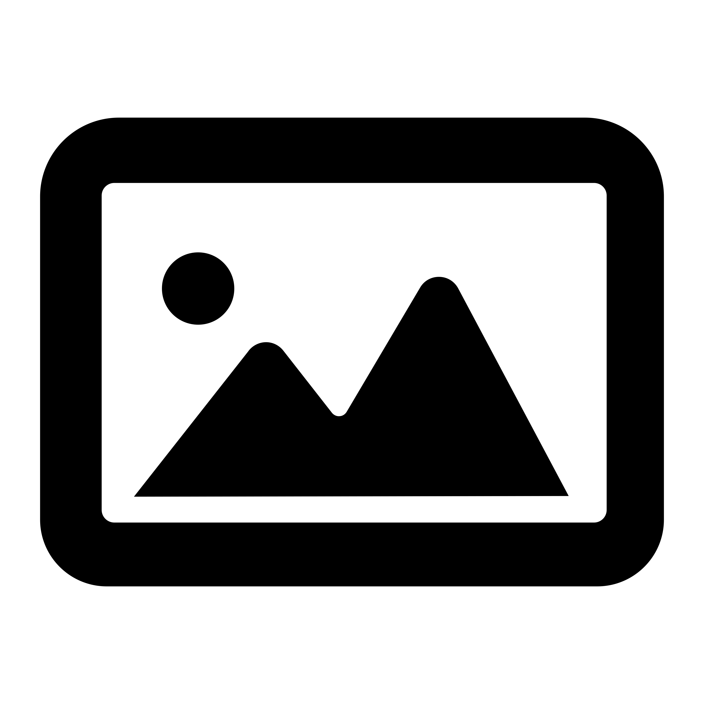

Ash Reynolds Portfolio
RESUME
CURRENT WORK
PROJECTS

Experience
Intern - NBC News Data Graphics
Currently, I'm working as an intern for the Data Graphics team at NBC News. I work with reporters from all across the institution to build charts and tell stories through data.
Marketing Intern - Seams Better
Worked as a marketing intern for
Seams Better
, a fashion company focused on ethical labor practices and sustainability. As an intern I created graphics, video content, weekly newsletter and communicated with brand partners.
Social Media Student Assistant - The New School Journalism + Design Department
Working as a student assistant to help grow the Journalism + Design social media presence. Creating posts, planning and working events, and maintaining a connection with an audience.
Projects
Head of Social Media, Reporter, Visuals - The New School Free Press
In my time at The New School Free Press, I've worn
many
different hats. As Head of Socials, I manage a team of editors to maintain audience engagement and stick to a consistent posting schedule. I've also done reporting and visuals work for the Free Press.
Head Editor, Marketing Manager - Love Letters Magazine
Much like the Free Press, I wore many hats here. I began as a prose editor, but then quickly became Marketing Manager where I worked on the website, designed virtual issues and managed relationships with an audience and other magazines. For the last year of Love Letters, I became Head Editor, managing a team of people from across the globe to publish our issues.
Marketing Manager - Inglemoor Theater Company
My design career began in high school, when I was Marketing Manager for the theater department. Here I designed posters, printed programs, Instagram posts and filters, sweatshirts and more.
Skills
Adobe Suite
HTML/CSS
Git/Github
Data Visualization
Reporting
Marketing Experience
Illustration
Links
The NYC Subway Remains Largely Inaccessible to the Disabled Community
Love Letters Magazine (Archived)
J+D Instagram
Seams Better Instagram (Ran from June - August 2024)
Free Press Instagram
Drama Instagram (Ran from September 2021 - June 2022)
Awards
Eugene Lang College Dean's List
Award to students with a 3.7 GPA or higher.
Special Honors: Student Achievement - Fifth Avenue Theater Awards
Award for outstanding work as marketing manager.
Click here for the living document of my resume!
Sorry if you think my website is ugly... enjoy Google docs...
 Ash Reynolds Portfolio
Ash Reynolds Portfolio
Ash Reynolds Portfolio
Ash Reynolds Portfolio